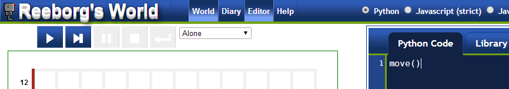

Reeborg's World
Reeborg's World
Quick Python tutorial using Reeborg's World
This tutorial assumes that you already know at least one programming language and you want to have a quick introduction to Python using Reeborg's world. The goal is not to be comprehensive, but to give you an idea of what it is like to program in Python using a visual environment instead of boring print statements.
To follow this tutorial, you should have Reeborg's World (the executable version) in a separate window. You can open such a window by clicking "Open World" above and make sure that Python is selected in the header. It if opens in a new tab, you might want to "pull" the tab so that it is in a separate window of its own. It should look like the following:

Reeborg's world uses Brython to convert Python 3 code in Javascript that is then run in the browser.
Hello Reeborg's world
In the other window, on the left, you should see Reeborg alone in its world. On the right, you should see an editor with the following line of code:
move()
Click on the "execute"
or "run" button  to make sure that everything is working as it should.
to make sure that everything is working as it should.
Assuming everything is set up correctly, Reeborg should have moved and
the "execute" button
is now disabled.
Click on  to enable it again, so that you can run the program again.
to enable it again, so that you can run the program again.
Python functions
The instruction move() is an example of a Python function.
To be able to execute a function, we must have three things:
- It must have a valid name; it this case, it is
move. Valid names must start with either a letter or the underscore character "_" and may contain letters, numbers or the underscore character "_". In Python 3, non-ascii characters are allowed; however, Brython (currently) does not recognize them as valid characters.prénom = "Guido" # e-acute valid in Python 3 but not in Brython
- It must be invoked, by adding
()after its name. - On its own (i.e. not within a block ...), it must start at the beginning of a line, with no space in front. Space at the beginning of a line (indentation) is meaningful in Python.
Type (or copy-paste) the following code in the editor and run it.
# This is a comment move() # another comment m = move # alternative name defined m() # execute turn_left() # another function that Reeborg knows.
Note that Python is case-sensitive. Verify this by trying to run the following program:
Move()
Other functions in Reeborg's world
If you click on "Help" in the other tab/window where programs are run, you will see a list of functions specific to Reeborg's world.
Defining functions
While Python is an Object-Oriented programming language, it often uses functions as first-class objects.
Here is how one defines a simple function in Python:
def move2(): # note the colon ":" and the "def" keyword
move() # blocks are defined by indentation
move()
move2() # use it
Try it!
Other than for indentation, and delimiting names and keywords, spaces have no meaning in Python. So, the following, while not quite as readable, is equivalent to what we wrote immediately above.
def move2 ( ) :
move ()
move( )
move2 ( )
Python 3 keywords
False None True and as assert break class continue def del elif else except finally for from global if import in is lambda nonlocal not or pass raise return try while with yield
For loops
Currently, Reeborg is in a world called Alone. Select instead the world Center 1 and have Reeborg execute the following program:
for a_variable in range(2): # range is a builtin function
move()
put()
As you can see, Reeborg takes 2 steps and puts down a "token" at the center of its world.
Select world Center 2 and modify the above code (by changing a single character) so that Reeborg execute the correct task.
If statements
Click on "Diary" at the top of the other window so that we
can see what Reeborg writes using print().
Select world Home 1 and run the following:
for a_variable in range(10): # more than enough repetitions
move()
print( a_variable )
if at_goal():
turn_left() # for no good reason
turn_left() # other than seeing the block structure
break # out of the for loop
While loops and negation
Try the following, still with world Home 1
while not at_goal():
move()
Alternatively, run the following:
while front_is_clear():
move()
One more thing to try:
while front_is_clear() and not at_goal():
move()
move() # after the while loop
front_is_clear() and at_goal() are two functions
that return boolean values.
Test your understanding
If you did not already know programming, you should be reading the other, much slower pace tutorial. Since you already know how to program, and are presumably reading this to get a quick overview of Python, it is time to see if you understood what you read so far.
Using if statements and while loops, and strategically putting down tokens and picking them up, write a single program that can have Reeborg solve the required task for both worlds Center 1 and Center 2. Once you have a solution, extend it so that it works also for Center 3. Your program should be written so that it would work for any similar rectangular worlds, without using variables to count Reeborg's steps and figure out the size of its world. Note that Reeborg carries only 2 tokens.
Newspaper delivery
Python functions can take arguments. We give an example through a story.
Reeborg has a new job: he delivers the Northern Star newspaper. Many of Reeborg's customers do not live on the ground floor of their building. For each of these customers, Reeborg has to do the following
- Pick up a single copy of the newspaper (it would be too heavy to carry them all up the stairs).
- Climb up the required number of floors to reach the customer's door.
- Get the money (tokens) left by the customer.
- Leave a copy of the newspaper (simply nicknamed the star) behind.
- Climb down to the ground level
While Reeborg has many clients, I only included two with their corresponding worlds:
- The nice Ms. Ada Lovelace, who lives on the third floor of her building, always leaves a couple of extra tokens as a gift to Reeborg; hers is world Newspaper 1.
- The old curmudgeon Mr. Charles Babbage, who lives on the fifth floor, always pays the exact amount, leaving no tip for Reeborg; his world is Newspaper 2
With the help of the following two instructions:
take("star") # pick it up to carry
put('star') # single quotes or double quotes can be used to surround strings
we can make Reeborg complete at least one delivery. Here's a program to deliver a newspaper to Ms. Lovelace.
def turn_around():
repeat(turn_left, 2)
def turn_right():
repeat(turn_left, 3)
def upstairs():
turn_left()
move()
turn_right()
move()
move()
def downstairs():
move()
move()
turn_left()
move()
turn_right()
take("star")
repeat(upstairs, 3)
while token_here():
take()
put("star")
turn_around()
repeat(downstairs, 3)
Also, note that Reeborg can only turn to its left. To have Reeborg turn to its right, it must make 3 left turns as defined above.
Modify the above program so that Reeborg can use it to deliver newspapers to the two clients. You only need to replace two lines by two short loops. You already have seen all the required functions.
You may have noticed the repeat function that takes two
arguments, one of which is a function name; this function is specific to
Reeborg's world. Here is one way that
one could define such a function in Python:
def repeat(f, n):
for i in range(n):
f()
if/elif/else
You are probably already familiar with the idea of various branches depending on conditions tested by if statements. One can have a series of exclusive if statements, denoted as "else if" in some programming languages which is shortened as "elif" in Python.
select_world("Maze 1")
think(0)
def turn_right():
repeat(turn_left, 3)
def follow_right_wall():
if right_is_clear():
turn_right()
move()
elif front_is_clear():
move();
elif False: # just to illustrate
pass
else:
turn_left()
while not at_goal():
follow_right_wall()
Note that the first instruction will switch to the appropriate world and terminate if that world is different from the one that was previously selected. Running the program again will work as expected.
A bit of fun
When you looked at the code for the newspaper delivery example,
you probably noticed that, to go down a stair, Reeborg had to do operations
in the reverse order than that for going up a stair, while exchanging
left turns and right turns. Instead of hard-coding a function for
going up (or down) stairs, we can create a list of instructions that
can be executed one by one by Python. [exec
can actually execute more than one instruction at a time, but
we will not do so in the following example.] Python lists are equivalent
to "arrays" in some other languages. By reversing the list,
using a specific Python idiom, and interchanging left and right turns,
again using a Python idiom that does not require the use of an
intermediate variable like one might do in most languages
temp = left left = right right = temp
but is done as follows:
left, right = right, left
one can have Reeborg deliver correctly the newspaper.
left = turn_left
def right():
repeat(left, 3)
def turn_around():
repeat(left, 2)
def move2():
repeat(move, 2)
def exec_commands(a_list):
for cmd in a_list:
exec(cmd)
upstairs = ["left()", "move()", "right()", "move2()"] # a Python list
take("star")
while not token_here():
exec_commands(upstairs)
while token_here():
take()
put("star")
turn_around()
downstairs = upstairs[::-1] # create reverse list
left, right = right, left # tuple interchange!
while not at_goal():
exec_commands(downstairs)
OOP: Reeborg the UsedRobot
Python is an Object-Oriented Programming (OOP) language. Objects can have attributes (variables) belonging to them as well as methods, which is the name given to a function that belongs to an object. The symbol used to indicate that an attribute or method belongs to a particular object (aka instance of a class [of objects]) is a ".".
Select world "Empty" and run the following program:
reeborg = UsedRobot() reeborg.move() karel = UsedRobot(4, 4, 'n') karel.move() reeborg.turn_left() reeborg.move()
Importing modules
In a Python program, one can import an existing module (other program) to make use of its functions. Python is often described as "batteries included" for the number of useful modules that are part of its standard library.
Suppose we wish to simulate throwing a normal die (not one of those
fancy non-cubic dice), one that can give an integer from 1 to 6 as its result.
To do so in Python, we can make use of the randint method
found in the random module.
Below are four equivalent ways to make the randint
function available in a program. Do not do this yet!
import random result = random.randint(1, 6)
from random import randint result = randint(1, 6)
import random as choice result = choice.randint(1, 6)
from random import randint as die result = die(1, 6)
The random module is included in the Brython distribution. However, when importing the random module in Python, various other modules are imported as well behind the scene. This is done very rapidly when running Python locally. Brython however uses ajax calls to import modules. A total of 45 calls have to be made when importing random for the first time in a given browser session. This is slow. However, a mostly compatible pure javascript module is included in the Brython distribution, and this is what we will use in the next example.
Inheritance
We've already mentioned that Python is an OOP. In Python, objects are
instances of a given class. [Python modules are also objects in the
sense that they have their own methods and attributes.] We
have mentioned that UsedRobot was a class. Instances
of that class have a number of methods. Suppose we wish to create a new
class of objects that inherits all the existing methods of another one,
and add new methods. We can easily do this in Python as shown in the
following example:
select_world("Maze 1")
from __random import randint # using the special Brython module
think(0) # speeding things up as this program may take a while
RUR.MAX_STEPS = 10000 # Try to make sure we will not stop the program early
class Gambler(UsedRobot):
def roll_die(self):
return randint(1, 6)
def turn_right(self):
self.turn_left()
self.turn_left()
self.turn_left()
del RUR.current_world.robots[0] # remove existing UsedRobot
lucky = Gambler()
while not lucky.at_goal():
result = lucky.roll_die()
if result < 5:
if lucky.front_is_clear():
lucky.move()
else:
result = lucky.roll_die()
if result in [1, 2, 3]:
lucky.turn_left()
else:
lucky.turn_right()
elif result == 5:
lucky.turn_left()
else:
lucky.turn_right()
The above approach, where "lucky" checks to see if there is a wall
before attempting a move is known as "loop before you leap". There is
an alternative approach one might use, known as "better ask forgiveness
than permission". Hitting a wall raises an exception in Reeborg's world.
We can catch this exception [using a "bare" except which
is not usually recommended but done here because of some technical
limitations of Reeborg's World] and handle it ourselves.
Modify the previous code by changing it as
written below. Open up Reeborg's Diary to see how the
finally clause is always executed.
if result < 5:
try:
lucky.move()
message = "ok"
except:
message = "ouch!"
result = lucky.roll_die()
if result < 4:
lucky.turn_left()
else:
lucky.turn_right()
finally:
write(message)
Conclusion
This conclude our very quick look at Python using Reeborg's world.